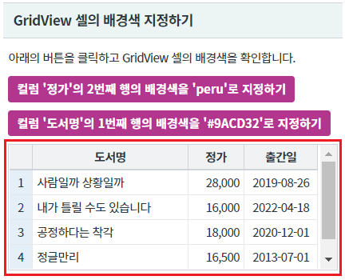
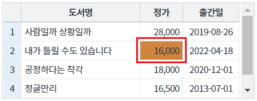
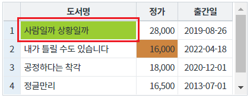
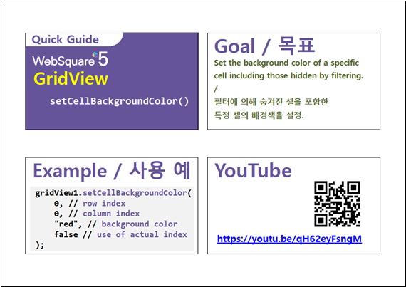

GridView의 특정 셀의 배경색을 지정하는 예제입니다. 이 기능은 함수 setCellBackgroundColor를 호출하여 사용할 수 있습니다.
셀의 배경색 지정하기
영역 [GridView 셀의 배경색 지정하기]의 GridView를 확인합니다.
GridView의 셀의 기본 배경색이 지정되어 있지 않습니다.
[브라우저(Chrome) 실행 예시]

버튼 컬럼 '정가'의 2번째 행의 배경색을 'peru'로 지정하기을 클릭합니다.
컬럼 '정가'의 2번째 행의 셀의 배경색이 'peru'로 변경됩니다.
[브라우저(Chrome) 실행 예시]

버튼 컬럼 '도서명'의 1번째 행의 배경색을 '#9ACD32'로 지정하기을 클릭합니다.
컬럼 '도서명'의 1번째 행의 배경색이 '#9ACD32'로 변경됩니다.
[브라우저(Chrome) 실행 예시]

GridView의 함수 setCellBackgroundColor을 사용합니다.
[소스 코드 예시]
//예제 파일의 스크립트 "scwin.btn_ex1_onclick" 또는 "scwin.btn_ex2_onclick"를 참고하세요. //GridView 'grd_exam1'의 컬럼 '정가'의 2번째 행의 배경색을 'peru'로 지정하기 grd_exam1.setCellBackgroundColor(1, "price", "peru"); //GridView 'grd_exam1'의 컬럼 '도서명'의 1번째 행의 배경색을 '#9ACD32'로 지정하기 grd_exam1.setCellBackgroundColor(0, "book_name", "#9ACD32");
setCellBackgroundColor( rowIndex , colIndex , color )
[웹스퀘어5 SP5 개발 가이드] GridView
링크 : https://docs1.inswave.com/sp5_user_guide/bc10c1b82c9a2a0b#e1c4658baf7e726f
[웹스퀘어5 SP5 개발 가이드] GridView 셀
링크 : https://docs1.inswave.com/sp5_user_guide/86bdcf48029b958b#968539217b7575c2
[웹스퀘어5 SP5 개발 가이드] GridView 특정 셀의 배경색 설정
링크 : https://docs1.inswave.com/sp5_user_guide/86bdcf48029b958b#5712edf5232af996
GridView 특정 셀의 배경색 설정
링크 : https://youtu.be/qH62eyFsngM
